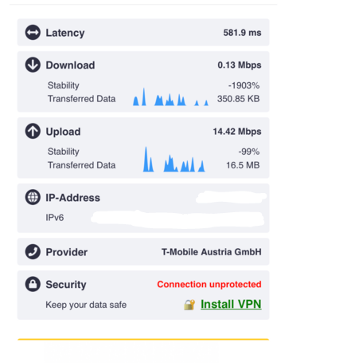

Ich wohne in Kaprun, hier verfünffacht sich die Bevölkerung in der Hauptsaison von 2000 auf fast 10000 Menschen.
das Problem ist, dass somit in Stoßzeiten das Internet quasi nicht zu gebrauchen ist.
ich habe einen Mobilfunkvertrag sowie einen Internetvertrag über LTE für zuhause und derzeit sieht’s wieder mal so aus, dass die Downloadrate gegen späten Nachmittag und Abend auf bis zu unter 1MB fällt.
Upload unter 15MB.
Lt. störungsabfrage ist alles in Ordnung….
das ist auf Dauer nicht zumutbar! Gibt es hierfür Lösungsansätze seitens Magenta?
vielen Dank!

Hallo @Dowart und willkommen in der Magenta Community,
Gerne helfen dir hier auf der "User helfen User" Basis weiter.
Bitte führe einen Speedtest über LAN und über den RTR Netztest durch. Nimm auch alle verbundenen Geräte während des Tests aus deinem Netzwerk. Poste uns bitte dann die Werte und nenne uns auch um was für einen Router es sich handelt diesen du in Verwendung hast
Hey @Dowart
Es wäre auch gut zu wissen, welchen Tarif und welchen Router du verwendest.
So wie es aussieht hat Magenta in Kaprun insgesamt drei Sendemasten, wobei nur einer etwas besser ausgestattet ist und die anderen beiden nur eine Basisausstattung haben.
Wie sieht es denn DSL mäßig aus? Damit sollte auf jeden Fall eine deutlich stabilere Bandbreite möglich sein, auch wenn viele Touristen im Ort sind. Schau mal bei folgendem Verfügbarkeitscheck, die DSL-Verfügbarkeit nach:
https://www.telematica.at/internet/verfuegbarkeitscheck (beim Ergebnis auf "Für Technik-Verliebte - Alle Herstellungsdetails basierend auf Ihrem Standort" klicken, um eine Tabelle mit allen Details anzuzeigen).
LG NTM
Mein Mobilfunktarif ist „my mobile M 03/20“
auf den Internettarif für zuhause will ich jetzt garnicht genauer eingehen. Da die Verbindung am IPhone gleich schlecht ist wie im Heim WLAN…..
wie sieht das denn rechtlich aus? Als Anbieter hat Magenta doch bestimmt eine Verpflichtung das angebotene Produkt zu liefern?
DSL wäre an meinem Standort möglich, jedoch bringt mir das im Bezug aufs Handy wenig…
eine Aufrüstung der Kapazitäten seitens Magenta wäre wohl angebracht.
vielen Dank für eure Hilfe
vor 9 Stunden schrieb Dowart:Als Anbieter hat Magenta doch bestimmt eine Verpflichtung das angebotene Produkt zu liefern?
Nein,da shared Medium wie bei allen mobilen Internetzugängen. Laut AGBs gibt es nur eine Mindestgeschwindigkeit die erreicht werden muss. Näheres dazu findest du in deinem Vertrag.
…die Mindestgeschwindigkeit liegt aber vermutlich über 1MB….
egal, habe gerade 2 Verträge gekündigt und werde den Anbieter wechseln.
der dritte Vertrag läuft dann im Jänner aus, dann haben die Touristen etwas mehr Bandbreite 😏
Ja,vermutlich über 1 MBit, aber dazu müsste man die AGBs von deinem Vertrag wissen. Kann dir aber bei deinen neuen mobilen Provider aber genauso passieren wenn das Netzwerkmangement greift und Breitbandklassen bei hoher Last Usern zuteilt.
Tourismusregionen haben meistens diesen Nachteil wenn diese stark frequentiert sind.Kenne das von Kitzbühel genauso wenn sozusagen die MBit bei allen Providern trotz geeigneter Hardware mit Kanalbündelung "tröpfeln" aber so ist das nun mal bei einem geteilten Medium. Hoffe aber das die Bandbreite bei deinem neuen ISP trotzdem besser ist.
Hi @Dowart , ich empfehle dir dich beim Technikteam unter 0676 200 7777 zu melden und das Thema zu besprechen.
Über spezielle Fernwartungstools können unsere Kolleg*innen sich die Versorgungsalge anschauen und darauf reagieren bzw. prüfen, welche Möglichkeiten es gibt sowie das Gebiet mit hoher Auslastung der zuständigen Abteilung melden. LG Karo